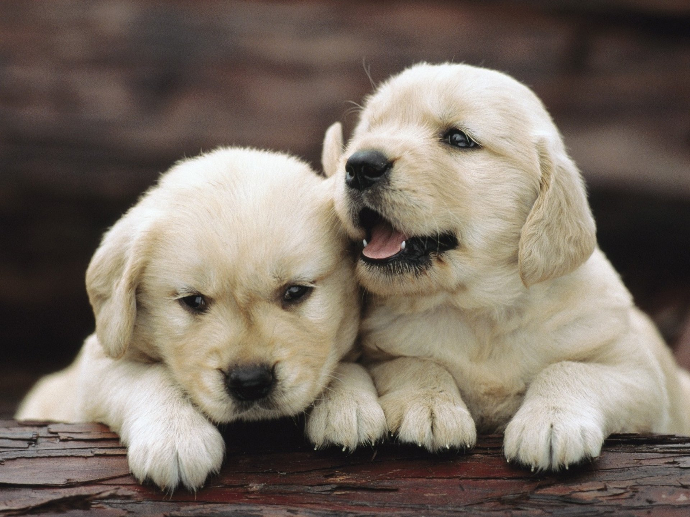
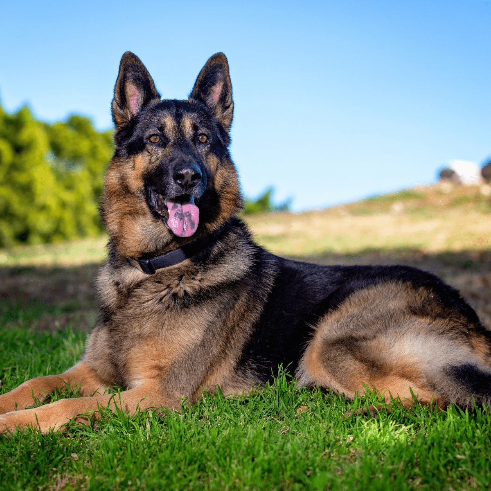
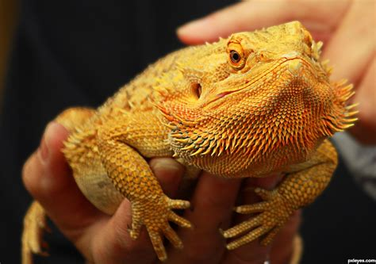
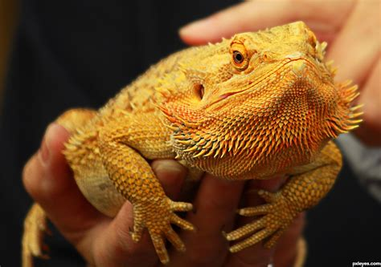

Team Dag



Dog people enjoy going outside, as they get the opportunity to socialize with neighbors and other dog walkers. This means dog people are more likely to be extroverts, which can make them more outgoing, energetic, and enthusiastic.
Team Cats


Cat people are considered more introverted and less social than dog people. This might be because they enjoy staying inside and curling up with a good book over being forced to go outside every day to walk a dog. Cat people are more likely to be quiet, calm, and introspective.
Team Others

 

Of course, some people love pets other than cats or dogs, such as rabbits, turtles, hedgehogs, and bearded dragons.